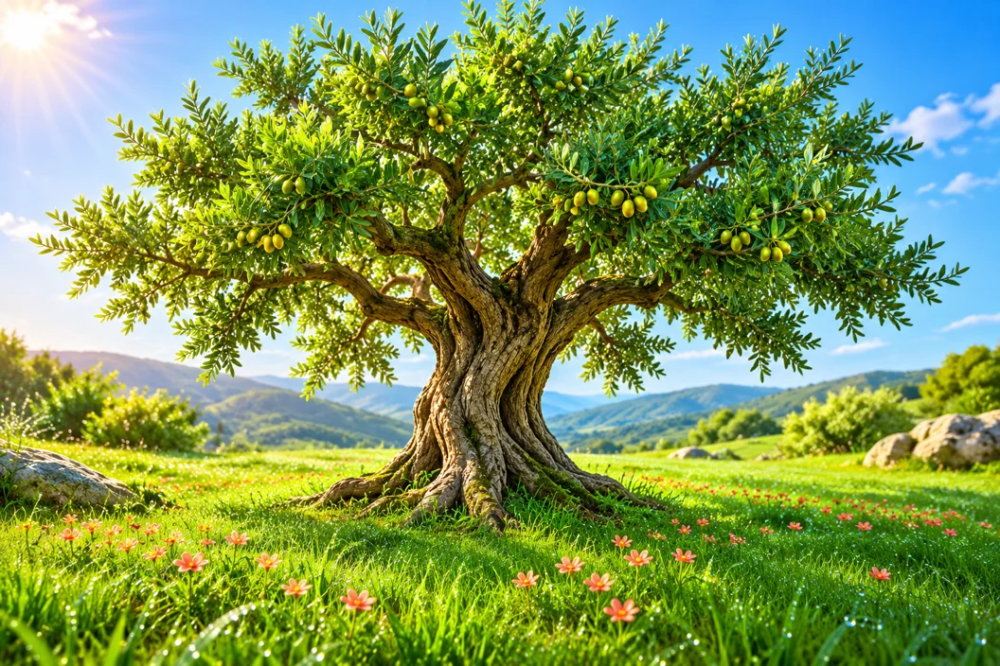

01ٱللَّهُ لَآ إِلَٰهَ إِلَّا هُوَ ٱلْحَىُّ ٱلْقَيُّومُ
Аллах — нет божества, кроме Него, Живого, Вседержителя.
Жизнь в сотворённой природе; не изображение жизни Аллаха.Сура «Аль-Бакара» · 2:255
Один аят. Девять смысловых опор.
Скачать чёрно-белый A4ٱللَّهُ لَآ إِلَٰهَ إِلَّا هُوَ ٱلْحَىُّ ٱلْقَيُّومُ لَا تَأْخُذُهُۥ سِنَةٌ وَلَا نَوْمٌ لَّهُۥ مَا فِى ٱلسَّمَٰوَٰتِ وَمَا فِى ٱلْأَرْضِ مَن ذَا ٱلَّذِى يَشْفَعُ عِندَهُۥٓ إِلَّا بِإِذْنِهِۦ يَعْلَمُ مَا بَيْنَ أَيْدِيهِمْ وَمَا خَلْفَهُمْ وَلَا يُحِيطُونَ بِشَىْءٍ مِّنْ عِلْمِهِۦٓ إِلَّا بِمَا شَآءَ وَسِعَ كُرْسِيُّهُ ٱلسَّمَٰوَٰتِ وَٱلْأَرْضَ وَلَا يَـُٔودُهُۥ حِفْظُهُمَا وَهُوَ ٱلْعَلِىُّ ٱلْعَظِيمُ
Махмуд Халиль аль-Хусари · учительское чтение (Mu’allim). Запись на EveryAyah ↗
Аят раскрывает единобожие и совершенство Аллаха. Он жив и самодостаточен, поддерживает существование творений и не нуждается в отдыхе. Вся власть принадлежит Ему; заступничество возможно лишь с Его разрешения. Его знание охватывает прошлое и будущее, тогда как знание творений ограничено дарованным Им. Величие Курси и сохранение небес и земли свидетельствуют о Его могуществе. Забота о творении не утомляет Его.
Ас-Саади · 2:255 · краткое изложение, не дословная цитата. Источник ↗Это части одного аята, а не отдельные аяты. Деление помогает запоминанию и не назначает места остановки при чтении. Каждому фрагменту соответствует отдельная картинка-подсказка. Изображения условны: это не тафсир, не изображение Аллаха и не достоверное описание сокровенного.
Под арабским текстом — полный учебный подстрочник каждого фрагмента: собственная передача смысла, не перевод конкретного автора. «Курси» сохранено как термин и не заменено словом «Арш».

01ٱللَّهُ لَآ إِلَٰهَ إِلَّا هُوَ ٱلْحَىُّ ٱلْقَيُّومُ
Аллах — нет божества, кроме Него, Живого, Вседержителя.
Жизнь в сотворённой природе; не изображение жизни Аллаха.لَا تَأْخُذُهُۥ سِنَةٌ وَلَا نَوْمٌ
Не овладевают Им ни дремота, ни сон.
Чередование ночи и дня помогает вспомнить отрицание дремоты и сна.لَّهُۥ مَا فِى ٱلسَّمَٰوَٰتِ وَمَا فِى ٱلْأَرْضِ
Ему принадлежит всё, что на небесах, и всё, что на земле.
Земля и космос — условная подсказка к словам «небеса и земля».مَن ذَا ٱلَّذِى يَشْفَعُ عِندَهُۥٓ إِلَّا بِإِذْنِهِۦ
Кто тот, кто заступится перед Ним иначе как с Его разрешения?
Ключ напоминает о разрешении; это не изображение заступничества.يَعْلَمُ مَا بَيْنَ أَيْدِيهِمْ وَمَا خَلْفَهُمْ
Он знает то, что перед ними, и то, что позади них.
Напоминание о словах «перед ними» и «позади них».وَلَا يُحِيطُونَ بِشَىْءٍ مِّنْ عِلْمِهِۦٓ إِلَّا بِمَا شَآءَ
И они не охватывают ничего из Его знания, кроме того, что Он пожелает.
Ограниченное знание ученика; не образ знания Аллаха.وَسِعَ كُرْسِيُّهُ ٱلسَّمَٰوَٰتِ وَٱلْأَرْضَ
Его Курси объемлет небеса и землю.
Условная художественная иллюстрация Курси для запоминания, не утверждение о его истинном облике. Аллах не изображён.وَلَا يَـُٔودُهُۥ حِفْظُهُمَا
И не тяготит Его сохранение их обоих.
Небеса и земля, сохранение их обоих. Световой контур — условный художественный символ, не описание того, как Аллах сохраняет их.وَهُوَ ٱلْعَلِىُّ ٱلْعَظِيمُ
И Он — Всевышний, Великий.
Высота и масштаб природы как словесная подсказка, не место или образ Аллаха.Учебный черновик. Таджикские значения ниже ещё не прошли словарную проверку Vazhaju; не используйте их как проверенный перевод.
Значения отдельных слов в контексте. Частицы читаются вместе с оборотом; это не связный перевод аята.
Аллоҳ
Морфология ↗нест
Морфология ↗маъбуд
Морфология ↗ҷуз
Морфология ↗Ӯ
Морфология ↗Зинда
Морфология ↗Қайюм
Морфология ↗на
Морфология ↗Ӯро фаро мегирад
Морфология ↗пинак
Морфология ↗ва на
Морфология ↗хоб
Морфология ↗аз они Ӯст
Морфология ↗он чӣ
Морфология ↗дар
Морфология ↗осмонҳо
Морфология ↗ва он чӣ
Морфология ↗дар
Морфология ↗замин
Морфология ↗кӣ
Морфология ↗он
Морфология ↗ки
Морфология ↗шафоат мекунад
Морфология ↗назди Ӯ
Морфология ↗магар
Морфология ↗бо иҷозати Ӯ
Морфология ↗Ӯ медонад
Морфология ↗он чӣ
Морфология ↗пеши
Морфология ↗онҳост
Морфология ↗ва он чӣ
Морфология ↗паси онҳост
Морфология ↗ва на
Морфология ↗онҳо фаро мегиранд
Морфология ↗чизеро
Морфология ↗аз
Морфология ↗илми Ӯ
Морфология ↗магар
Морфология ↗он чиро ки
Морфология ↗Ӯ хоҳад
Морфология ↗фаро гирифтааст
Морфология ↗Курсии Ӯ
Морфология ↗осмонҳоро
Морфология ↗ва заминро
Морфология ↗ва на
Морфология ↗Ӯро гарон меояд
Морфология ↗нигоҳдории ҳар ду
Морфология ↗ва Ӯ
Морфология ↗Бартар
Морфология ↗Бузург
Морфология ↗تَأْخُذُهُ: глагол настоящего времени, 3-е лицо женского рода; ـهُ — объект «Его». سِنَةٌ — существительное женского рода.
يُحِيطُونَ: IV порода, множественное число, корень ح و ط.
حِفْظُهُمَا: имя + местоимение двойственного числа, «сохранение их обоих».
لَا إِلَٰهَ إِلَّا هُوَ: отрицание вместе с исключением выражает единственность.
لَهُ: предлог لِـ с присоединённым местоимением ـهُ. В контексте аята речь о принадлежности Ему.
بِإِذْنِهِ: بِـ + إِذْن + ـهِ, «с Его разрешения». Не путайте إِذْن («разрешение») с أُذُن («ухо»).
Проверить пословную грамматику в Quranic Arabic Corpus ↗عَلِمَ · يَعْلَمُ · عِلْمٌ
Знал · знает · знание. Корень ع ل م.
حَفِظَ · يَحْفَظُ · حِفْظٌ
Сохранил · сохраняет · сохранение. Корень ح ف ظ.
Это словарные формы, а не дополнительные слова аята.
هَذَا كِتَابٌ.
Это книга. هَذَا указывает на предмет.
فِي الْبَيْتِ كِتَابٌ.
В доме есть книга. فِي — предлог, после него الْبَيْتِ.
Это собственные языковые примеры, не аяты и не тафсир.
Единственность → ни дремоты, ни сна → всё принадлежит Ему → разрешение → знание → предел знания творений → Курси → сохранение → величие.
Ягонагӣ → на пинак ва на хоб → осмонҳо ва замин → иҷозат → илм → ҳадди дониши махлуқот → Курсӣ → нигоҳдорӣ → бузургӣ.
Иллюстрации служат только подсказками памяти. Условный художественный образ Курси не описывает его истинный облик; Аллах не изображён.
Чтение Хафс от Асыма. Следуй одному проверенному образцу чтеца; не определяй длительность по секундам.
При соединении مِنْ عِلْمِهِ — нун сакина перед ع произносится ясно (изхар).
При соединении بِشَيْءٍ مِنْ — танвин перед م сливается с гунной (идгам с гунной).
При остановке на الْعَظِيمُ конечная م читается без гласной; возможен мадд арид лис-сукун. При остановке удлинение 2, 4 или 6 харакат; при продолжении естественное удлинение 2. Практику сверь с учителем.
Правила таджвида · пособие ↗Прослушай аят в плеере выше. Для повторов с паузой открой тренажёр. Выбери одну трудную часть, повтори её по образцу чтеца, затем соедини с предыдущей. В конце проверь весь аят без подсказки.
Перейти к аудио и повторениям →